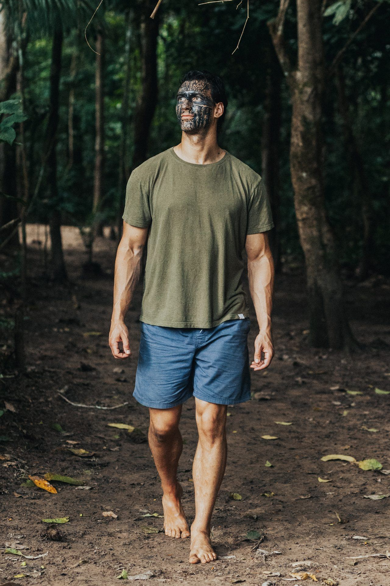
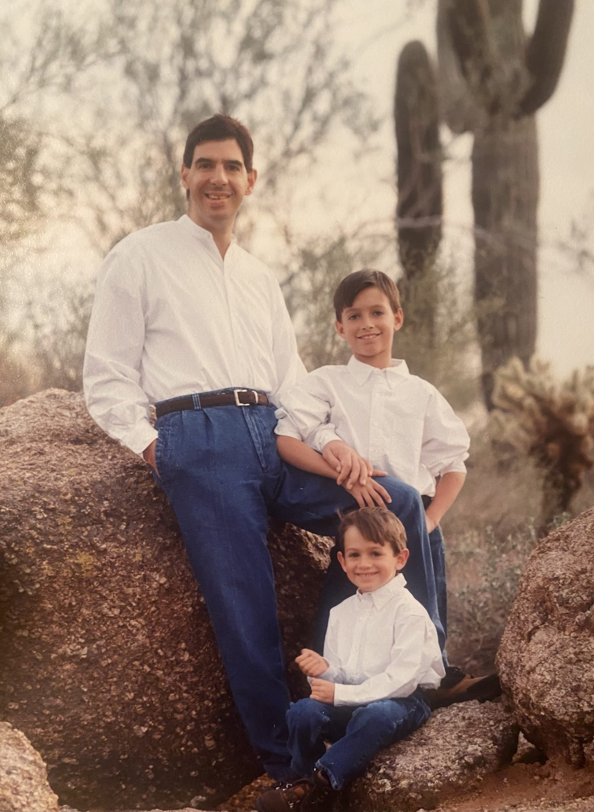
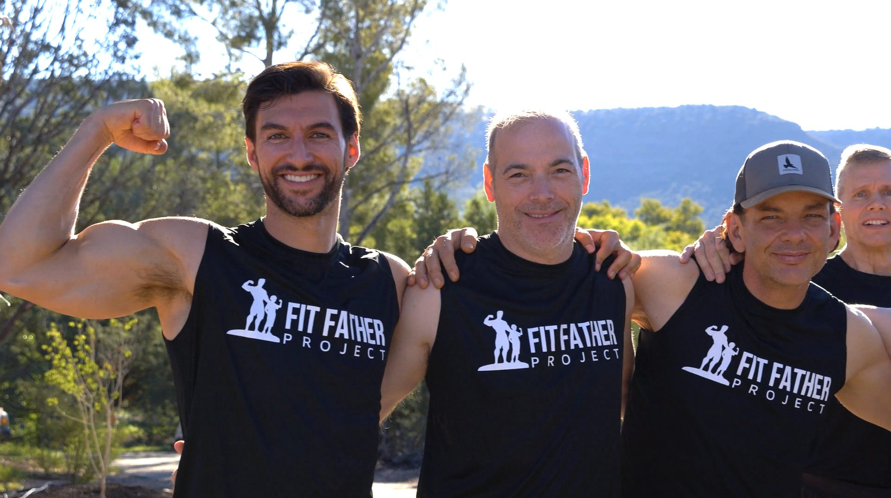
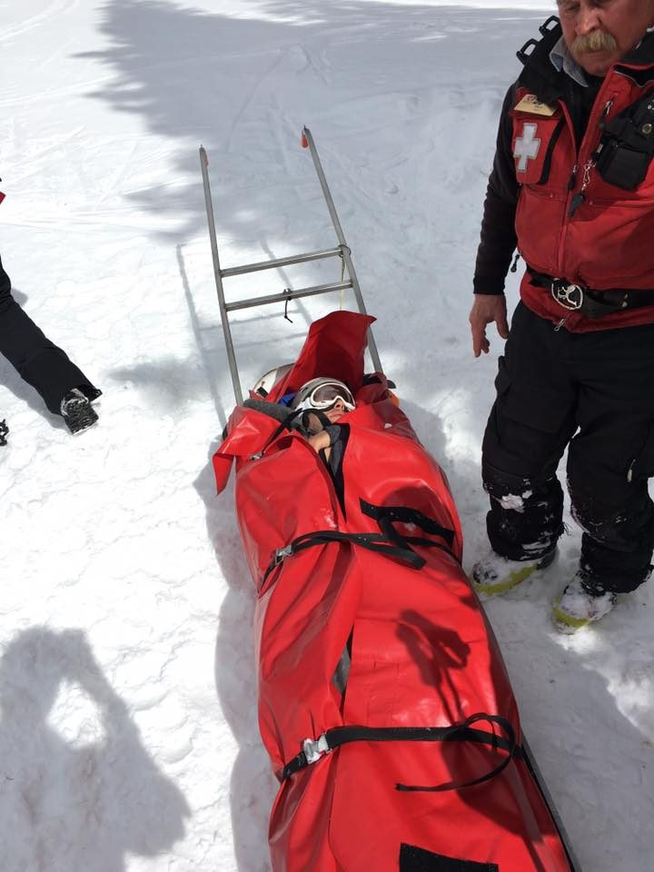
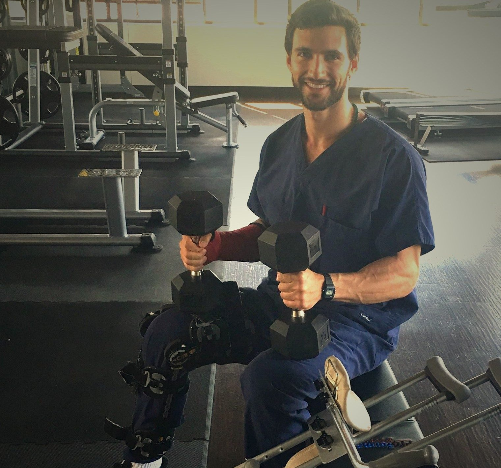
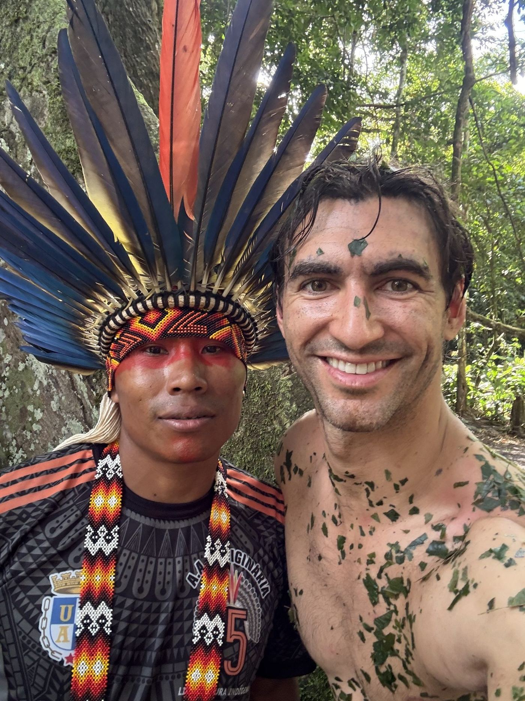
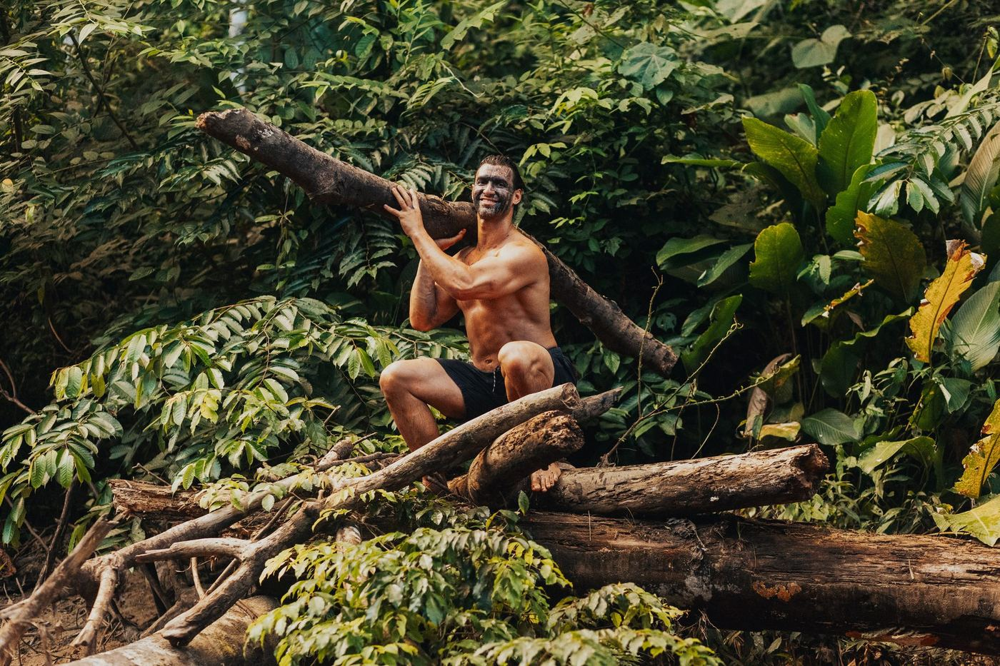
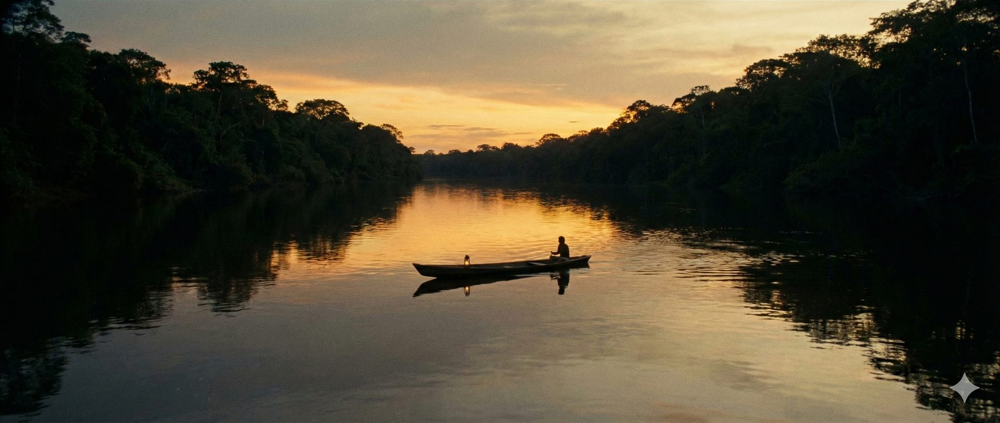

You Already Feel It
You have succeeded at everything except the thing that matters most.
You have built something real. The career, the family, the discipline. People look at your life and see a man who has it together. But you know the truth. There is a quiet ache beneath the surface that no amount of achievement can touch. A wildness inside you that has gone tame. A center you can feel but cannot quite reach. Everything around you is accelerating. AI is reshaping work, meaning, identity. And the faster the world moves, the louder the question becomes: what actually makes you come alive? You are not broken. You are misaligned from your center. And some part of you already knows it.
I know because I have lived every part of that sentence. I lost my father at nine. I nearly died on a ski slope. I have been through seven surgeries, a divorce, a decade of rebuilding, and a spiritual awakening in the Amazon that changed everything. I am a naturopathic doctor who built companies serving tens of thousands of families. But the work that changed my life was not the wide circle. It was the inner one. Finding my center. And that is the work I now do with men like you.

What if the ache you have been carrying is not a wound, but an invitation?
Why I Can Guide You
I am not speaking from theory. I am speaking from scars.
The First Fire
At nine years old, I watched cancer take my father. He was forty two. In that loss, a furnace was lit inside me. I made a vow I did not fully understand yet: I would learn how to heal. I would learn how to keep people alive.

The Body as Teacher
I turned my pain into physical discipline. Competitive bodybuilding taught me what it means to sculpt something from suffering, to use the body as a container for will. It was not the destination, but it was the training ground.

Fit Father Project
What began as a mission became a movement. Fit Father Project and later Fit Mother Project grew into companies serving tens of thousands of families. The wide circle was expanding. I was helping men reclaim their vitality, their energy, their lives.

The Tree
I ignored an intuition to slow down on a ski slope and slammed into a tree at full speed. Shattered leg. Broken arm. Nearly died. Seven surgeries over the next decade, including a leg lengthening procedure. In the wreckage, something clarified. The body is not the whole story. There is something deeper holding us together that no surgeon's hand can reach.


The Amazon
A plant medicine journey in the Amazon opened a door I did not know existed. In the jungle, with the fire and the medicine and the silence, I met parts of myself I had been running from my whole life. I sat in total darkness for a week. I stopped running. I found a direct, personal, felt communion with God that was mine alone.

The Inner Circle
The wide circle still turns. Fit Father and Fit Mother continue to serve. But the innermost circle is opening. Sacred, slow, one man at a time. In an age where everything is accelerating, I am being called to help men return to what is most human. To find the center of power I have found. This is the work I was built for.


The cage you built is not who you are. The power at your center is.
The Work
This is not coaching. This is a return to center.
You do not need another program. You do not need more information. You need someone who has walked the path you are standing at the edge of and can walk it with you. This work is about cultivating power from your center: the alignment of body, mind, and spirit that lets you lead your life, your partner, your family, and your mission from a place of clarity and aliveness. It begins with an in person meeting. You come to me, or I come to you. From there, we go deep together.
Physical Alignment
We start with the body because the body does not lie. Spinal alignment, nervous system regulation, movement that builds strength and play back into your days. Aligned nutrition based on your labs. Breathing, hydration, getting outside. We reawaken the joy that only comes from moving your body. The body is the first honest mirror, and your center starts here.
Inner Exploration
We explore the deepest questions: Who are you? Where do you come from? Why are you here? What is the alignment from your center? We do the shadow work. We look at your key relationships and what they mirror back. We train in meditation and stillness until you can get quiet enough to hear what has been waiting inside you.
Ceremony
At the right point in the work, we go into nature. You take sacred medicine in a safe, legal container. I hold space. This is not recreational. This is the ancient work of meeting yourself in the dark and coming back whole. For many men, this is where the direct, personal connection to something greater than themselves becomes undeniable.
Life Alignment
We examine your relationships, your fears, your mission, your daily patterns. We do the emotional clearing and rebuilding. We follow your authentic excitement. We chase adventure together: a hard climb, an extended fast, whatever pushes your edge. At the midpoint, I come to your home. We do it together in your world.
Integration and Release
I transmit my system: movement, nutrition, stillness, creative expression, daily alignment with nature, and a practice of connection that belongs to you alone. This is not a subscription. The work has an ending. You will not need me forever. I send you back into your life centered, alive, and free.
Recognition
You already know if this is for you.
Where you are now
You have built the life you were supposed to want and you know something essential is missing. There is a deeper, wilder call in your spirit that you have gone tame against. The world around you is accelerating. AI is replacing what you thought made you valuable. And the question you have been avoiding is getting louder: what actually makes you come alive?
Your physical health is not where you want it to be. You are escaping: doom scrolling, self medicating, consuming more and feeling less. You feel the misalignment from your center in your bones. You are not broken. You have lost connection to what is most human about you. And you are ready to find it again.
Where this takes you
Fully alive. Centered in your power. Connected to something greater through your own direct knowing, not someone else's script. Physically strong, moving with joy, eating with intention. Your relationships mending, deepening, becoming honest. Following your authentic excitement again. Leading your family and your mission from center.
This is not optimization. Not biohacking. Not a weekend retreat. This is the full spectrum work of returning to what is most human: creation, connection, nature, strength, stillness, and love. It requires radical honesty, time, emotional availability, and openness to plant medicine work. The men who are ready do not need to be convinced. They feel it.
The Agreements
What you can expect from me.
You will be met exactly where you are. No judgment. No performance required.
You will have a guide beside you, not above you. This is not guru work. This is two men in the work together.
Your space will be sacred and confidential. Whatever emerges stays between us.
You will receive the full weight of everything I have learned: the medicine, the spiritual practice, the hard won lessons from my own breaking and rebuilding.
You will leave with a system that can serve you for life. Movement, nutrition, stillness, creative expression, connection to nature, and daily alignment from center.
This work has an ending. You will not need me forever. I transmit what I know and send you back into your life, transformed and free.

Stay Connected
Letters from Center
If you feel the pull but are not ready to step in yet, start here. These are not newsletters. They are transmissions from the inner work: reflections on what it means to return to human in an age that is pulling us further from ourselves. Stories, lessons, and invitations written from center. Something in these words may light what is already waiting inside you.

Every crossing begins
with a single conversation.
Your Move
Request a Conversation
There is no pitch on the other side of this form. No sales call. Just a real conversation between two men to see if this work is yours. You will know within minutes whether this is your path.
Be honest when you write. Drop the resume version of yourself. The work begins the moment you stop performing.